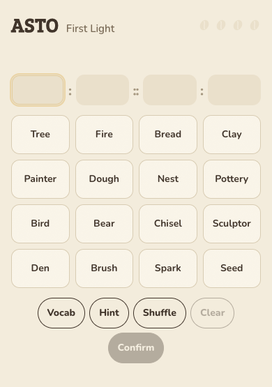
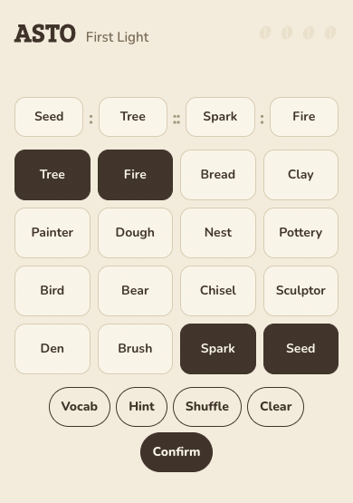
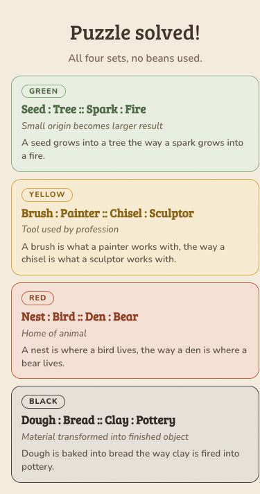
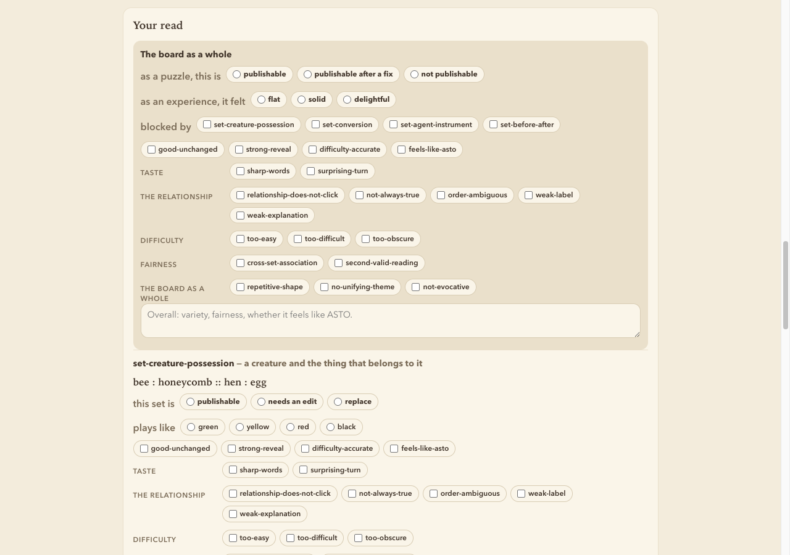
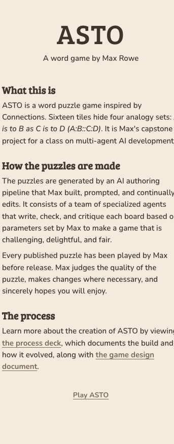
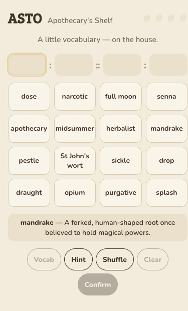
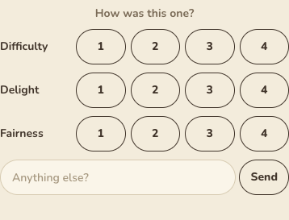

Act I · The game
Connections, but with analogies. A 4×4 board of sixteen words hides four analogy sets.
The game is the deliverable. The machine that authors it, and the governance around that machine, is the work.
As of August 16, 2026. The game is live at playasto.com.

Act I · The rules
Tap four words to form A : B :: C : D, seed is to tree as spark is to fire, review the frame, press Confirm.

Act I · The fantasy
The puzzle is not “which words are similar?” It is “what relationship repeats across these pairs?”
Four sets, four difficulty tiers. Tiers are revealed on solve and never shown on the live board, so the difficulty is something you discover, not something you're warned about.
Seed : Tree :: Spark : Fire
Lose on the fourth mistake. The loss screen reveals every unsolved set with its explanation, so you always find out what you missed.

Act II · The machine
The first version was a five-agent Python crew: raw SDK, no framework, blackboard orchestration, a bounded revise loop, and a retrieval layer. It ran. It produced boards.
It was retired anyway. The replacement lives inside the game repo, in the same language as the game, so it imports the game's own validators directly. One schema, no drift between the thing that generates content and the thing that plays it.
Retired in place, not deleted, with a handoff document written so someone could rebuild it without access to the original code.
The intuition going in was that generating good pairs is the difficult part and assembling them is bookkeeping. That is backwards.
from the retired crew's lessons-learned
Assembling four sets that simultaneously satisfy one-per-tier, sixteen unique words, no cross-set collisions and four distinct relation types is constraint satisfaction, and that is where it actually failed.
Act II · The studio
Every agent is a pure function with a declared input and output schema. One module is the only writer of run artifacts. One module owns the only network call. The nine stages run unattended, with no mid-pipeline human gates, and a person is involved only once a complete candidate board exists. Two agents sit off the line: the subject scout, because a static pool of 91 subjects had lapped twice, and the revision proposer, which proposes fixes and never authors them.
Zero dependencies. No framework, no build step, no package in package.json. Tests use node's own runner. The schema validator is hand-written because the constraint demanded it, and that constraint is what produced the injectable transport seam that makes the whole pipeline testable offline. The dashed auto-revise step is the one place the machine may fix a board before a person sees it. What it is allowed to touch is Act IV.
Act II · What went wrong
The brief asked for 8 pairs. A set is two pairs, so 8 is exactly four sets with zero slack. The grouper set aside two pairs as not belonging to any coherent set, leaving six pairs, so three sets. The builder needs four.
It refused rather than inventing one. That part was the guard working.
8 pairs can only ever succeed if nothing is discarded, and grouping always discards.
The failure was cheap. The retrying was not. The run paid for three board-builder attempts at the highest effort setting in the pipeline, all against an unchanged pool of three sets.
A retry that changes nothing is resampling.
$0.163 to rediscover something knowable the moment stage 02 returned.
Act II · Making it affordable
The diagnosis was not “use a cheaper model.”
| Stage | Before | After | Change |
|---|---|---|---|
| 02 theme grouper high→medium | 65s · $0.104 | 16s · $0.032 | 4× faster · 3.3× cheaper |
| 04 board builder xhigh→medium | 166s · $0.244 | 10s · $0.022 | 16× faster · 11× cheaper |
| Full run | $0.542 avg of 3 | $0.2097 measured | −61% |
Three stages were 85% of cost and 84% of time, and on all three, 91–94% of billed output was thinking rather than answer. The stages weren't too big. They were being asked to deliberate over work that didn't need deliberating.
The board builder's prompt had four jobs. One of them was “prove no two sets could regroup into another valid analogy.” That is combinatorial over sixteen words, and it was already being done exhaustively by the deterministic gate, for free, on every single run.
That number was true on August 5. It did not hold, and the reason it did not hold was a choice. Act VI.
Told the board builder was the expensive problem, Max pushed back: it only picks one analogy per tier, so it should be simple. He was right. The stage was simple; its prompt wasn't. Stop paying a model to prove what a deterministic check already proves.
Act III · The limit
Every board was starting to feel the same. The corpus said why: ~80% of all 284 pairs ever authored were the same relationship, one thing becoming or producing another.
The obvious next move was to write a taxonomy of relationship types from taste, and steer the pipeline with it.
The shape field was free text, so 40% of pairs were uncountable. The diversity steering had been running on 60% of the data the whole time.
I can't be fully relied on to create a foundation for analogies because I am not an expert. I'm merely interested in playing them.
Max, redirecting the project
So the project didn't write one. It went and found one.
Act III · The fix
Bejar, Chaffin & Embretson (1991): 10 families, 79 relation types, developed at ETS to classify GRE verbal analogy items, reachable through SemEval-2012 Task 2 under CC-BY.
Compiled into a controlled vocabulary the pipeline actually runs on: 36 relation types and 8 stances, with a named failure mode on each, enforced at four separate doors.
Two of the game's locked decisions turned out to be independently validated by that literature: pair order matters (reversed pairs are marked as bad examples), and relation membership is graded rather than binary.
Mapping the existing corpus onto the taxonomy showed exactly how narrow it had been:
A vocabulary you can count against turns a vague feeling, “these all seem similar”, into a number you can steer with.
Act III · The playtest
Round 1. A board built with one set from each of four formally different families. Played blind, it read as “all the same, an object moving forward in time somehow.” Three of the four tiers got demoted. The experiment invalidated its own design: formal diversity produced zero felt diversity, because every set still carried an arrow: a direction, a before and an after.
Round 2. Blind again, board letters flipped, with an equally evocative control so the effect couldn't be a theme artefact. The mixed arrowed/arrowless board came back as “the best puzzle yet… This is ASTO.” The all-arrowed control was rejected with the effect named unprompted: “another ‘arrow’ puzzle.”
Recorded as decision D-3, marked n=2, hypothesis not law at Max's own instruction, with a written trigger naming what would have to happen to overturn it. “Let's make sure we don't view the revised principle as immutable.”
Same theme, same night, same evocativeness, letters assigned blind. The only variable was whether every set pointed in a direction.
Act III · Measuring taste
141 recorded judgements in, the corpus had a hole in it: 21 of 79 tagged set-events said reject-set while carrying nothing but praise. The board-level button was stamping its verdict onto every set beneath it. Sets he had called “a great green” were logged as rejected, in the very corpus the editorial rubric would be compiled from.
His richest signal was never the chips at all. It was prose: 103 written notes, 112 characters on average, carrying fix proposals 6×, emotion 10×, and cross-set comparison 14×.
Board rejection means the whole is unpublishable. The sets still get honest, independent reads.
Rebuilt: a tri-state board verdict with named blockers, per-set verdicts that are never inherited, a first-class “how would you fix it?” field, and a formVersion on everything, so two different instruments are never read as one population.
This is the instrument every number in the rest of this deck comes from. It has since recorded 726 feedback events across 109 judged boards, and formVersion is why the boards judged before the rebuild are never silently pooled with the ones after it.
Across 55 events he kept writing the same four judgements in prose, because no chip carried them. They became chips.

Act IV · Earning delegation
Two boards were rejected for two specific problems. The adversarial solver had flagged both of them, in almost the same words, and nothing carried that anywhere.
Louvre and Musée d'Orsay are themselves extremely famous museums
near-synonyms… stock spy-gear items
He was re-deriving by hand what the pipeline had already written down. Everything in this act is an answer to that, and the answer took four attempts before it was allowed to touch a board.
The same shape of bug appeared three separate times, and got named in the log as this project's signature failure:
A rule enforced at one door and not the one downstream.
A pair-count floor added to the web form and not the CLI. A quota checked at the wrong granularity. Evaluator findings produced and never routed. Each one individually reasonable; together, a pattern worth having a name for.
Act IV · Order, again
A submission is never sorted, so the ordered claim is the claim. That turns an ambiguous order from a style note into a fairness bug.
If A : B :: C : D reads exactly as truly backwards, the player is no longer solving the puzzle. They are guessing which direction the author happened to pick.
seed : bud :: bloom : wilt
The board that surfaced it: he had read the right half the other way round, got the four words correct, and lost a mistake to a coin flip. Three detectors were added across the pipeline to catch that shape before a player meets it.
orderGuessed, which records that it solved the words but had to guess the direction.All three report and none of them can block. A wrong fix gets reviewed by a person; a wrong veto silently costs a good board, and nobody ever sees what was lost.
Act IV · Steering
Two prompt-authoring failures with the same root: a prompt teaches by example, and both of these taught the wrong thing.
Stage 01 was reproducing its own prompt's teaching example, and a board built that way had already shipped before anyone noticed. A teaching example must not be shaped like the deliverable, so the example was demoted to a fragment no finished set could be copied from, and a test now proves no generative prompt quotes a complete set.
The hardest set had become a clock: time held 19 of 54 Blacks, 35% against 17% for the next stance. Max refused to publish an already-approved board over it.
We def need to fix this.
Max, on a board the pipeline had passed
The first attempt forbade the clock. Usage barely moved, because an exclusion can only relocate the slot: forbid one well and the model simply finds the next one. A negative steer never says what you do want.
The fix that worked was a positive, always-on ask: name the stance the hardest set should carry, vary it deliberately across runs, and say so at every stage that holds a lever rather than only at the first.
When the next batch came back with its Blacks actually spread across reference, absence and inclusion, his entire note was one word.
FINALLY!
Act IV · The graduation
The machine is now allowed to fix a board before a person ever sees it. What it took to earn that, and what it still may not touch, are the same story.
Chosen explicitly by Max and revocable by him: the adversarial solver's cross-set-association at high severity, and the order-ambiguity cluster from the previous slide. Nothing else is read.
knowledgeGated is deliberately off the list. A flag that names a wall without condemning a set must not trigger surgery, and the board it flagged was his best one.If the fix still trips the allowlist, the board goes to him as it is, carrying both the findings and the diagnosis of the failed repair.
Act V · In public
Shipped on August 13, 2026 to playasto.com, tagged v0.2.0-public.
Anyone can play a board without knowing a pipeline wrote it. That is exactly why the page exists, and why it is linked from the end screen as well as the homepage: a shared link goes straight to a board and never passes the front door.

Act V · What shipping changed
Before the ship, the pipeline decided what the game could be. After it, the game started specifying the pipeline.
The glossary author must define the word without leaking the set's relationship, and it is allowed to decline. A definition that gives the puzzle away is worse than no definition, so the stage's real job is being useful without spoiling.

Act V · The first outside judgement
An end-screen survey, three questions and a comment box, writing to the first hosted service the project has ever adopted. It is a free tier and it costs nothing.
Within hours of it going live, somebody who is not Max rated a board and left a note.
loved the theme of this one
the first judgement in this project not made by its author
n=1, from an instrument three days old. It is not validation and it is not traction. What changed is a category, not a score: the loop now has a door a stranger can put a judgement through.
All 726 feedback events the pipeline is actually steered by are still his. Every claim in the previous act rests on one person's taste, and the machine was trained to catch what that one person catches.

Act VI · The account
Twenty-two numbered decisions, thirty records counting amendments, and 426 decision events in the run corpus. Each decision is written down in the same shape: what was recommended, what was chosen and why, the risk accepted, and a concrete trigger for reconsidering it.
The arrow finding, kept explicitly as a hypothesis at n=2 and not promoted to a rule.
Reconsider when: a third or fourth board fails to reproduce it, or boards built under it draw the opposite complaint.
The Revision Proposer proposes fixes and never authors them: deliberately not a pipeline stage, and it reads the human's judgement first, the evaluators' second.
Graduation trigger, written before the feature that would earn it: ~10 briefs with a recorded verdict. If they're accepted substantially unedited, propose a bounded auto-revise loop. Cashed in Act IV.
The auto-revision bound was counted per run. A revision that died on billing before running a single stage consumed the board's only shot, and a board carrying a defect three detectors had flagged reached him anyway.
Changed to: the unit is the board, not the run. A re-rolled board is a new board and is entitled to its own examination. A machine given authority also gets its bound tightened when the bound turns out to be wrong.
1 occurrence → keep it as an example. 3 similar → a possible pattern. 5 consistent → propose a rule to a human. Agents improve through external, versioned, inspectable memory, never by rewriting themselves.
Act VI · The bill
$0.21 a run was true on August 5. It is not true now.
| Measure | August 5 | Today | Change |
|---|---|---|---|
| Cost per run measured | $0.2097 | ~$1.38 avg since Aug 9 | 6.6× |
| Pipeline stages | 8 agents | 9 agents, plus 2 off the line | +1 stage |
| Total spend | not tracked | $108.17 129 real-API runs |
A ninth stage that writes the vocabulary definitions. The auto-revise loop, which spends a whole extra pass to hand a person a better board. Richer prompts carrying a controlled vocabulary and a corpus. A model upgrade on the two stages whose judgement turned out to matter most. Every one of those was chosen.
So the first cost slide is still true, and it is also the smaller half of the story. The optimization was real and the pipeline that got optimized no longer exists.
The uncomfortable half: the slim-down lap that would reclaim some of this is written down, agreed, and still not run. Its trigger was about ten judged boards under the new profile. There are 109. That is the same shape as the rubric on the closing slide, and two overdue triggers in the same project is a pattern rather than an excuse.
Act VI · The honest list
Thirteen of them. The list grows with the deck on purpose: an act of mostly successful material was added, so the account of what went wrong had to grow with it.
shape field that made 40% of the corpus uncountable and the diversity steering blind to it..gitignore of *.git add -A, carrying feedback the AI had typed itself to exercise the form. Synthetic judgement is indistinguishable from real judgement once it is in the file the rubric compiles from. Caught at wrap-up; all four removed.Act VI · Measured again
A read-only tool re-runs any evaluator stage against any board already in the archive, so the agent is the only variable. Same board, same model, same effort, eleven days of prompt work in between.
unity: strong
evocativeness: strong
The second answer is to a question the first version had no field for. The axis did not exist yet, so the old agent could not have been wrong about it. It could only be silent.
Input is built by the pipeline's own stage-input builders, so a re-run cannot drift from a real run. It writes to the terminal and nowhere else: a re-run is commentary, never history.
Max had called that board an absolute snooze. Today's agent answered strong, and went on to praise the exact wording his own note had wanted sharpened. The disagreement was reported as it came back, unedited.
That is the useful result, not the improvement. An evaluator that only ever agrees with you is not an instrument, it is a mirror. Across the whole archive the same axis has returned generic fourteen times, and every one of the fourteen carried a concrete replacement suggestion.
The counterweight: one board, one stage, chosen by the person the machine was flattering. It measures that the agent changed. It does not measure that the agent is right.
Act VI · August 16, 2026
Phases 1 through 5 are complete and the game is live. Three things are not.
The rubric does not exist. This entire feedback loop was built to compile one. The plan of record said compile it at roughly thirty judged boards, and there are 109. It is the oldest unpaid debt in the project and there is no good reason for it.
The slim-down lap has not been run. A run costs about six and a half times what it cost on August 5. That was a choice; the reclaim is a choice that keeps not being made.
One judgement in the corpus is not his. A stranger rated a board on August 13. Every other one of the 726 events steering this pipeline was recorded by the person who built it.
Not the game. The habit of writing down what was decided and why, of naming the trigger that would change your mind before you need it, of granting a machine authority only against evidence you wrote the standard for in advance, of keeping the failed experiment instead of the tidy summary, and of knowing which judgements are yours to make and which ones you should go and borrow from someone who actually knows.
Validity can be delegated and checked. Taste is the product.